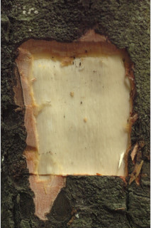
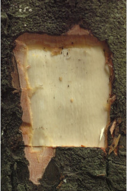
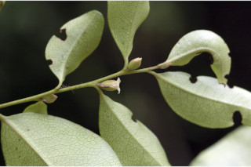
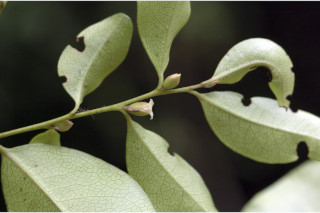

Trees up to 8 m tall.
8 ಮೀ. ಎತ್ತರದವರೆಗೆ ಬೆಳೆಯುವ ಮರಗಳು.
8 മീറ്റര് വരെ ഉയരത്തില് വളരുന്ന മരങ്ങള്.
மரம், 8 மீ. உயரம் வரை வளரக்கூடியது
Bark black; blaze light brown.
ತೊಗಟೆ ಕಪ್ಪು ಬಣ್ಣದಲ್ಲಿರುತ್ತದೆ; ಕಚ್ಚು ಮಾಡಿದ ಜಾಗ ಮಂದವಾದ ಕಂದು ಬಣ್ಣದಲ್ಲಿರುತ್ತದೆ.
പുറംതൊലിക്ക് കറുത്തനിറം; വെട്ട്പാടിന് ഇളം തവിട്ട് നിറം.
மரத்தின் பட்டை கருப்பு நிறமுடையது; பட்டையின் உட்புறம் வெளிறிய அரக்கு நிறம்.
Young branchlets terete, pubescent.
ಕಿರುಕೊಂಬೆಗಳು ದುಂಡಾಗಿದ್ದು ಮೃದುತುಪ್ಪಳದಿಂದ ಕೂಡಿರುತ್ತವೆ.
ഇളംഉപശാഖകള്, ഉരുണ്ടതും, രോമിലവുമാണ്.
சிறிய நுனிக்கிளைகள் குறுக்குவெட்டுத் தோற்றத்தில் வளையமானது, உரோமங்களுடையது.
Leaves simple, alternate, distichous; petiole up to 0.5 cm long, planoconvex in cross section; lamina 4.5-8.5 x 1.5-3.5 cm, elliptic to elliptic-lanceolate, chartaceous, apex acute with blunt tip, base acute, glabrous; midrib canaliculate; secondary_nerves ca.11 pairs, tertiary_nerve closely reticulate.
ಎಲೆಗಳು ಸರಳವಾಗಿದ್ದು ಪರ್ಯಾಯ ಹಾಗೂ ಸುತ್ತು ಜೋಡನಾ ವ್ಯವಸ್ಥೆ ಯಲ್ಲಿದ್ದು ಕಾಂಡದ ಎರಡೂ ಕಡೆಯ ಎದುರು ಬದರಿನ ಸಾಲಿನಲ್ಲಿರುತ್ತವೆ; ಎಲೆ ತೊಟ್ಟುಗಳು 0.5 ಸೆಂ. ಮೀ ಉದ್ದವಿದ್ದು ಅಡ್ಡ ಸೀಳಿದಾಗ ಸಪಾಟ ಪೀನ ಮಧ್ಯದ ಕಾರದಲ್ಲಿರುತ್ತವೆ; ಪತ್ರಗಳು 4.5 – 8.5 X 1.5 – 3.5 ಸೆಂ.ಮೀ. ಗಾತ್ರ, ಅಂಡವೃತ್ತ-ಭರ್ಜಿಯ ಆಕಾರ, ಮೊಂಡಾದ ಅಗ್ರವುಳ್ಳ ಚೂಪಾದ ತುದಿ; ಚೂಪಾದ ಬುಡ ,ಕಾಗದವನ್ನೋಲುವ ಮೇಲ್ಮೈ ಹೊಂದಿದ್ದು ರೋಮರಹಿತವಾಗಿರುತ್ತವೆ; ಮಧ್ಯನಾಳ ಕಾಲುವೆಗೆರೆಯನ್ನು ಹೊಂದಿರುತ್ತದೆ;ಎರಡನೇ ದರ್ಜೆಯ ನಾಳಗಳು ಅಂದಾಜು 11 ಜೋಡಿಗಳಿರುತ್ತವೆ; ಮೂರನೇ ದರ್ಜೆಯ ನಾಳಗಳು ತೀರಾ ಸನಿಹವಾಗಿದ್ದು ಜಾಲ ಬಂಧ ನಾಳವಿನ್ಯಾಸವನ್ನು ಹೊಂದಿರುತ್ತವೆ.
ലഘുവായ ഇലകള്, ഏകാന്തരമായി, തണ്ടിന്റ രണ്ടുഭാഗത്ത് മാത്രമായടുക്കിയവിധത്തിലാണ്; 0.5 സെ.മീ വരെ നീളമുളള ഇലഞെട്ടിന് ഛേദത്തില് ഒരുഭാഗം പരന്നും മറുഭാഗം ഉരുണ്ടുമിരിക്കുന്ന ആകൃതിയാണ്; പത്രഫലകത്തിന് 4.5 സെ.മീ മുതല് 8.5 സെ.മീ വരെ നീളവും 1.5 സെ.മീ മുതല് 3.5 സെ.മീ വരെ വീതിയും, ദീര്ഘവൃത്തം തൊട്ട് ദീര്ഘവൃത്തീയ - കുന്താകൃതിയോ ആണ്, കടലാസ്പോലത്തെ പ്രകൃതം, മുനപ്പില്ലാത്ത നിശിതാഗ്രവും, പത്രാധാരം നിശിതമാണ്, അരോമിലം; മുഖ്യസിര ചാലോട് കൂടിയതാണ്; ഏതാണ്ട് 11 ജോഡി ദ്വിതീയ ഞരമ്പുകള്; ത്രിതീയ ഞരമ്പുകള് വളരെ അടുത്ത ജാലിതമാണ്.
இலைகள் தனித்தவை, மாற்றுஅடுக்கமானவை, இருநெடுக்கு வரிசையிலையடுக்கம் (டைஸ்டிக்கஸ்); இலைக்காம்பு 0.5 செ.மீ. வரை நீளமானது, குறுக்குவெட்டுத் தோற்றத்தில் பிளேனோகான்வக்ஸ்; இலை அலகு 4.5-8.5 X 1.5-3.5 செ.மீ., நீள்வட்டம் முதல் நீள்வட்ட-ஈட்டி வடிவமுடையது, சார்ட்டேசியஸ், அலகின் நுனி கூரியது மற்றும் மழுங்கியது, அலகின் தளம் கூரியது, உரோமங்களற்றது; மையநரம்பு மேற்புறத்தில் அலகின் பரப்பைவிட பள்ளமானது; இரண்டாம் நிலை நரம்புகள் 11 ஜோடிகள்; மூன்றாம் நிலை நரம்புகள் நெருக்கமான வலைப்பின்னல் கொண்டது.
Flowers unisexual, dioecious; male flower in axillary cymes; female flowers solitary, axillary, with cream and hairy petals.
ಹೂಗಳು ಏಕ ಲಿಂಗಿಗಳು; ಗಂಡು ಮತ್ತು ಹೆಣ್ಣು ಹೂಗಳು ಪ್ರತ್ಯೇಕ ಸಸ್ಯಗಳಲ್ಲಿರುತ್ತವೆ; ಗಂಡು ಹೂಗಳು ಅಕ್ಷಾಕಂಕುಳಿನಲ್ಲಿನ ಮಧ್ಯಾರಂಭಿ ಪುಷ್ಪಮಂಜರಿಯಲ್ಲಿರುತ್ತವೆ; ಹೆಣ್ಣು ಹೂಗಳು ಅಕ್ಷಾಕಂಕುಳಿನಲ್ಲಿ ಒಂಟಿಯಾಗಿದ್ದು ಕೆನೆ ಬಣ್ಣದಲ್ಲಿದ್ದು ರೋಮಗಳನ್ನುಳ್ಳ ಪುಷ್ಪಪತ್ರಗಳನ್ನು ಹೊಂದಿರುತ್ತವೆ.
പൂക്കള് ഏകലിംഗികളാണ്, ഡയീഷ്യസും; ആണ്പൂക്കള് കക്ഷ്യ സൈമുകളില് ഉണ്ടാകുന്നു; രോമിലമായ ക്രീംനിറത്തിലുളള ദളങ്ങളുളള പെണ്പൂക്കള്, കക്ഷങ്ങളില് ഒറ്റയായുണ്ടാകുന്നു.
ஓர்பால் மலர்கள், ஈரகம் கொண்டவை; ஆண்மலர்கள் இலைக்கோணங்களில் காணப்படும் சைம்; பெண்மலர்கள் தனித்தவை, இலைக்கோணங்களில் தோன்றும் மற்றும் கிரீம் நிறமுடைய உரோமங்களுடைய இதழ்களை உடையது.
Berry with fruiting_calyx; 1-3 seeded.
ಬೆರ್ರಿಗಳು ಪುಷ್ಪಪಾತ್ರೆ ಸಮೇತವಿರುತ್ತವೆ ಹಾಗೂ 1 ರಿಂದ 3 ಬೀಜಗಳನ್ನು ಒಳಗಳನ್ನು ಹೊಂದಿರುತ್ತವೆ..
1 മുതല് 3 വരെ വിത്തുകളുളള, കായ ഒട്ടിനില്ക്കുന്ന ബാഹ്യദളത്തോടുകൂടി ബെറിയാണ്.
முழுச்சதைகனி (பெர்ரி) மற்றும் நிரந்தரமான புல்லி இதழ்கள் கொண்டது; 1-3 விதைகளையுடையது.
 



 
